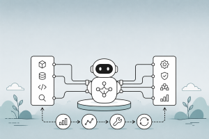

graph TD
A["Agent = Model + Harness"] --> B["Model<br/><small>LLM weights, intelligence</small>"]
A --> C["Harness<br/><small>Everything else</small>"]
C --> D["System Prompts"]
C --> E["Tools & Skills"]
C --> F["Infrastructure<br/><small>Filesystem, sandbox</small>"]
C --> G["Orchestration<br/><small>Subagents, routing</small>"]
C --> H["Middleware<br/><small>Hooks, checks</small>"]
C --> I["Memory<br/><small>Short-term, long-term</small>"]
C --> J["Context Management<br/><small>Compaction, offloading</small>"]
style A fill:#9b59b6,color:#fff,stroke:#333
style B fill:#e67e22,color:#fff,stroke:#333
style C fill:#3498db,color:#fff,stroke:#333
style D fill:#27ae60,color:#fff,stroke:#333
style E fill:#27ae60,color:#fff,stroke:#333
style F fill:#27ae60,color:#fff,stroke:#333
style G fill:#27ae60,color:#fff,stroke:#333
style H fill:#27ae60,color:#fff,stroke:#333
style I fill:#27ae60,color:#fff,stroke:#333
style J fill:#27ae60,color:#fff,stroke:#333
Harness Engineering for AI Agents
Understanding agent harnesses — the systems layer that turns raw LLM intelligence into production agents — from core primitives and middleware to continual improvement loops
Keywords
agent harness, harness engineering, agent architecture, agent middleware, context engineering, agent memory, continual learning, agent evaluation, Deep Agents, Claude Code, OpenAI Codex, Meta-Harness, LangChain, LangGraph, agent sandbox, self-verification, trace analysis, AGENTS.md, context management, agent improvement loop

Introduction
An agent is not just a model. An agent is a model plus a harness — the entire system of code, tools, prompts, middleware, and execution infrastructure that wraps the LLM and makes it useful. The model contains the intelligence; the harness makes that intelligence operational.
This distinction has become a central theme in agent engineering. LangChain defines it simply: “If you’re not the model, you’re the harness.” When Anthropic’s Claude Code source code was leaked, it revealed 512K lines of code — that code is the harness. Even the makers of the most capable model in the world invest heavily in the systems layer around it.
Harness engineering is the discipline of designing, building, and iteratively improving this systems layer. It sits at the intersection of design patterns, tool engineering, memory systems, and evaluation — connecting all these concerns into a coherent runtime that enables agents to do real work.
This article covers what a harness is, why it matters, what its core components are, how to customize it with middleware, and how to iteratively improve it using traces and automated analysis.
If you’d prefer a high-level summary of this article, watch the video overview generated by NotebookLM below. If you’d like a deeper dive, keep reading.
What Is an Agent Harness?
The Equation: Agent = Model + Harness
A raw LLM takes in text and produces text. Out of the box, it cannot:
- Maintain durable state across interactions
- Execute code or run commands
- Access real-time knowledge
- Set up environments and install packages
- Coordinate with other agents
The harness provides all of this. It is every piece of code, configuration, and execution logic that is not the model itself.
| Component | What It Does | Example |
|---|---|---|
| System Prompts | Instructions, persona, constraints injected into context | “You are a coding agent. Always verify your work before completing.” |
| Tools & Skills | Callable functions, APIs, and their descriptions | bash, read_file, web_search, MCP servers |
| Bundled Infrastructure | Filesystem, sandbox, browser, code interpreter | Docker containers, Daytona sandboxes |
| Orchestration Logic | Subagent spawning, handoffs, model routing | Supervisor patterns, parallel workers |
| Hooks / Middleware | Deterministic checks around model and tool calls | Compaction, loop detection, PII redaction |
| Memory Systems | AGENTS.md files, long-term memory stores, context injection | Filesystem-based memory, vector stores |
| Context Management | Compaction, tool-call offloading, progressive disclosure | Summarization when context fills up |
Real-World Harnesses
Every major agent product is built on a harness:
| Agent Product | Model | Harness |
|---|---|---|
| Claude Code | Claude Sonnet/Opus | ~512K lines of orchestration, tool management, context engineering |
| OpenAI Codex | GPT-5.2-Codex | Container runtime, apply_patch tool, encrypted compaction |
| Deep Agents | Model-agnostic | Open-source harness with middleware stack, memory plugins |
| OpenClaw | Multiple models | Pi framework + SOUL.md + skill system |
The key insight: even when web search or code execution appears “built into” a provider’s API, it’s still a harness — a lightweight system behind the API that orchestrates the model with those tools via tool calling.
Where Harness Engineering Fits
Harness engineering is not one thing — it connects multiple concerns in the agent development lifecycle:
graph LR
A["Design Patterns"] --> H["Harness Engineering"]
B["Skills & Tools"] --> H
C["Memory Systems"] --> H
D["Guardrails & Safety"] --> H
E["Evaluation & Debugging"] --> H
H --> F["Production Agent"]
style H fill:#9b59b6,color:#fff,stroke:#333
style F fill:#27ae60,color:#fff,stroke:#333
style A fill:#4a90d9,color:#fff,stroke:#333
style B fill:#4a90d9,color:#fff,stroke:#333
style C fill:#4a90d9,color:#fff,stroke:#333
style D fill:#4a90d9,color:#fff,stroke:#333
style E fill:#4a90d9,color:#fff,stroke:#333
Design patterns define the architectural blueprint — ReAct loops, orchestrator-workers, evaluator-optimizer. The harness is where those patterns become running code. Skills are the capabilities the harness loads and exposes. Memory is managed by the harness. Guardrails are enforced by harness middleware. And evaluation produces the traces that drive harness improvement.
Core Harness Primitives
Filesystem: The Foundation
The filesystem is the most foundational harness primitive because of what it unlocks:
- Workspace: Agents get a workspace to read data, code, and documentation
- Durable state: Work can be incrementally added and offloaded instead of holding everything in context. Intermediate outputs persist across sessions
- Collaboration surface: Multiple agents and humans can coordinate through shared files
- Memory: Standards like
AGENTS.mdandCLAUDE.mdare filesystem-based memory that gets injected into context on agent start
Git adds versioning so agents can track work, rollback errors, and branch experiments.
Code Execution: The General-Purpose Tool
The main agent execution pattern is a ReAct loop — reason, act via tool call, observe, repeat. But harnesses can only execute the tools they have logic for. Instead of building tools for every possible action, harnesses ship with bash/code execution as a general-purpose tool:
# Instead of pre-building every tool...
@tool
def install_package(name: str): ...
@tool
def run_tests(path: str): ...
@tool
def check_syntax(file: str): ...
# ...give the agent a general-purpose tool
@tool
def bash(command: str) -> str:
"""Execute a bash command in the agent's sandbox.
Use this for installing packages, running tests, checking syntax,
and any other command-line operation. The agent can design its own
tools on the fly via code.
"""
...This is a major step toward general-purpose autonomy — the model can solve problems by writing and executing code rather than being constrained to a fixed set of pre-configured tools.
Sandboxes: Safe Execution Environments
Running agent-generated code locally is risky and does not scale. Sandboxes provide:
- Isolation: Secure execution of agent-generated code
- Scale: Environments created on demand, fanned out across tasks, torn down when done
- Defaults: Pre-installed runtimes, packages, CLIs for git and testing, browsers for verification
The model does not configure its own execution environment. Deciding where the agent runs, what tools are available, what it can access, and how it verifies its work — these are all harness-level design decisions.
Context Management: Battling Context Rot
Context rot describes how model performance degrades as the context window fills. Harnesses are fundamentally delivery mechanisms for good context engineering:
Compaction — When the context window approaches its limit, the harness summarizes the existing conversation so the agent can continue working without losing critical information.
Tool-call offloading — Large tool outputs clutter the context. The harness keeps the head and tail tokens of tool outputs above a threshold and offloads the full output to the filesystem so the model can access it if needed.
Progressive skill disclosure — Instead of loading all skill instructions into context on start (which degrades performance before the agent begins working), harnesses load brief descriptions upfront and full instructions on demand. This connects directly to the progressive disclosure pattern from Building Skills for AI Agents.
Memory: Tied to the Harness
A critical insight from Sarah Wooders (CTO of Letta): “Asking to plug memory into an agent harness is like asking to plug driving into a car.” Managing context — and therefore memory — is a core capability and responsibility of the harness.
The harness decides:
- How is the
AGENTS.mdorCLAUDE.mdfile loaded into context? - How is skill metadata shown to the agent?
- Can the agent modify its own system instructions?
- What survives compaction, and what is lost?
- Are interactions stored and made queryable?
- How is memory metadata presented to the agent?
Short-term memory (messages, tool results) is handled directly by the harness. Long-term memory (cross-session) needs to be updated and read by the harness. This has a critical implication: if you use a closed harness, you don’t own your memory. Memory creates lock-in that model providers do not get from just the model.
For a deeper treatment of memory architectures, see Memory Systems for Long-Running Retrieval Agents.
Customizing Harnesses with Middleware
What Is Agent Middleware?
The core of every agent harness is simple: an LLM running in a loop, calling tools. Middleware exposes hooks that let you run custom logic before and after each step, so you control what happens at every stage:
graph LR
subgraph Agent_Loop ["Agent Loop"]
A["before_agent<br/><small>Load memory, validate input</small>"]
B["before_model<br/><small>Trim history, catch PII</small>"]
C["wrap_model_call<br/><small>Caching, retries, tool selection</small>"]
D["Model Call"]
E["after_model<br/><small>Human-in-the-loop</small>"]
F["wrap_tool_call<br/><small>Inject context, gate tools</small>"]
G["Tool Execution"]
H["after_agent<br/><small>Save results, clean up</small>"]
end
A --> B --> C --> D --> E --> F --> G
G -->|"Loop"| B
G -->|"Done"| H
style D fill:#e67e22,color:#fff,stroke:#333
style G fill:#27ae60,color:#fff,stroke:#333
style A fill:#4a90d9,color:#fff,stroke:#333
style B fill:#4a90d9,color:#fff,stroke:#333
style C fill:#4a90d9,color:#fff,stroke:#333
style E fill:#4a90d9,color:#fff,stroke:#333
style F fill:#4a90d9,color:#fff,stroke:#333
style H fill:#4a90d9,color:#fff,stroke:#333
style Agent_Loop fill:#e8f4fd, stroke:#ffffff
| Hook | When It Fires | Use Cases |
|---|---|---|
before_agent |
Once on invocation | Load memory, connect to resources, validate input |
before_model |
Before each model call | Trim history, catch PII before it hits the LLM |
wrap_model_call |
Wraps model call end-to-end | Caching, retries, dynamic tool selection |
after_model |
After model responds, before tool execution | Human-in-the-loop, content moderation |
wrap_tool_call |
Wraps tool execution | Inject context, intercept results, gate which tools run |
after_agent |
Once on completion | Save results, send notifications, clean up |
Middleware is composable — mix and match to build application-specific harnesses.
Common Middleware Patterns
PII Detection — Deterministic policy enforcement that cannot live in a prompt. You cannot prompt your way to HIPAA compliance:
from langchain.middleware import PIIMiddleware
# Masks/redacts/hashes PII on model inputs, outputs, and tool outputs
# Raises PIIDetectionError for critical PII detection situations
pii_middleware = PIIMiddleware(
action="redact", # or "mask", "hash"
on_critical="raise",
)Dynamic Tool Selection — A fast LLM identifies which tools from a registry are relevant for a given request, binding only those tools to the main model call. This minimizes context bloat from unnecessary tools:
from langchain.middleware import LLMToolSelectorMiddleware
# Runs a fast model in wrap_model_call to select relevant tools
tool_selector = LLMToolSelectorMiddleware(
selector_model=ChatOpenAI(model="gpt-4o-mini"),
tool_registry=all_available_tools,
)Summarization and Context Offloading — Prevents context overflow by summarizing message history and offloading verbose tool outputs to the filesystem:
from langchain.middleware import SummarizationMiddleware
# Summarizes history when it exceeds token threshold
# Extends verbose tool outputs to filesystem
summarization = SummarizationMiddleware(
token_threshold=100_000,
offload_tool_outputs=True,
)Loop Detection — Tracks per-file edit counts and nudges reconsideration when the agent enters “doom loops” (10+ edits to the same file without progress):
class LoopDetectionMiddleware(AgentMiddleware):
"""Detect and break doom loops where the agent makes
repeated small variations to the same broken approach."""
def __init__(self, max_edits_per_file: int = 10):
self.edit_counts = {}
self.max_edits = max_edits_per_file
def wrap_tool_call(self, tool_name, tool_input, call_fn):
result = call_fn(tool_name, tool_input)
# Track edits per file
if tool_name in ("edit_file", "write_file"):
path = tool_input.get("path", "")
self.edit_counts[path] = self.edit_counts.get(path, 0) + 1
if self.edit_counts[path] >= self.max_edits:
result += (
f"\n\n⚠️ You have edited {path} {self.edit_counts[path]} times. "
"Consider reconsidering your approach entirely."
)
return resultPre-Completion Checklist — Intercepts the agent before it exits and forces a verification pass against the task specification:
class PreCompletionChecklistMiddleware(AgentMiddleware):
"""Force the agent to verify its work before completing."""
def after_model(self, response):
if response.is_final_answer:
# Reinject a verification prompt instead of exiting
return self.inject_message(
"Before completing, verify your solution:\n"
"1. Re-read the original task specification\n"
"2. Run all tests and check output\n"
"3. Compare results against what was asked (not your own code)\n"
"4. Confirm all requirements are met"
)
return responseComposing a Full Middleware Stack
A production harness like LangChain’s Deep Agents composes multiple middleware layers:
from langchain.agents import create_agent
from langchain.middleware import (
SummarizationMiddleware,
ShellToolMiddleware,
PIIMiddleware,
ModelRetryMiddleware,
)
agent = create_agent(
model=ChatOpenAI(model="gpt-4o"),
tools=[...],
system_prompt="You are a coding assistant...",
middleware=[
ShellToolMiddleware(), # Initialize shell on start
PIIMiddleware(action="redact"), # Enforce PII policy
ModelRetryMiddleware(max_retries=3), # Handle API failures
SummarizationMiddleware( # Manage context window
token_threshold=100_000
),
LoopDetectionMiddleware( # Break doom loops
max_edits_per_file=10
),
PreCompletionChecklistMiddleware(), # Force verification
],
)The Harness Improvement Loop
Why Traces Are the Core
The most powerful aspect of harness engineering is that harnesses can be iteratively improved using execution traces. This is fundamentally different from model training — you are improving the system around the model, not the model itself.
The recipe:
graph LR
A["Run Agent<br/>on Tasks"] --> B["Collect Traces<br/>(LangSmith)"]
B --> C["Analyze Failures<br/>(Automated)"]
C --> D["Propose Harness<br/>Changes"]
D --> E["Evaluate"]
E -->|"Repeat"| A
style A fill:#4a90d9,color:#fff,stroke:#333
style B fill:#27ae60,color:#fff,stroke:#333
style C fill:#e67e22,color:#fff,stroke:#333
style D fill:#9b59b6,color:#fff,stroke:#333
style E fill:#e74c3c,color:#fff,stroke:#333
- Run the agent over a set of tasks
- Collect full execution traces — every model call, tool invocation, and result
- Analyze failures using automated trace-analysis agents that diagnose error patterns
- Propose targeted changes to the harness (prompts, tools, middleware)
- Evaluate and repeat
This works similarly to boosting in machine learning — each round focuses on the mistakes from the previous round.
Case Study: Deep Agents on TerminalBench 2.0
LangChain demonstrated the power of harness engineering by improving their Deep Agents coding agent from 52.8% to 66.5% on TerminalBench 2.0 — a +13.7 point improvement by only changing the harness, keeping the model (GPT-5.2-Codex) fixed.
The knobs they turned:
| Knob | Change | Impact |
|---|---|---|
| System Prompt | Added structured problem-solving guidance: Plan → Build → Verify → Fix | Agents stopped at first plausible solution less often |
| Self-Verification | Added PreCompletionChecklistMiddleware to force testing before exit |
Caught errors that agents missed in self-review |
| Context Injection | Added LocalContextMiddleware to map directory structures and discover tools on start |
Reduced search errors and onboarding time |
| Loop Detection | Added LoopDetectionMiddleware to break doom loops |
Recovered from repeated failed approaches |
| Reasoning Budget | Used a “reasoning sandwich” — xhigh for planning, high for implementation, xhigh for verification | Balanced compute spend vs. timeout limits |
The trace analysis workflow was itself built as a reusable Agent Skill:
- Fetch experiment traces from LangSmith
- Spawn parallel error-analysis agents — each examines a subset of failed traces
- Main agent synthesizes findings and proposes changes
- Human reviews and approves targeted harness changes
Meta-Harness: Automated Harness Optimization
The Meta-Harness paper from Stanford (Lee et al., 2026) formalizes harness optimization as a search problem. The key innovation: give the proposer agent access to the full execution context rather than compressed summaries.
graph TD
A["Filesystem"] --> B["All Prior Candidates'<br/>Source Code"]
A --> C["Execution Traces<br/>& Error Logs"]
A --> D["Scores"]
B --> E["Proposer Agent<br/>(Claude Code)"]
C --> E
D --> E
E --> F["Proposed Harness"]
F --> G["Evaluate on<br/>Held-out Tasks"]
G --> H["Store Logs"]
H --> A
style E fill:#9b59b6,color:#fff,stroke:#333
style A fill:#3498db,color:#fff,stroke:#333
style G fill:#27ae60,color:#fff,stroke:#333
The proposer is a coding agent (Claude Code) that reads a filesystem containing all prior candidates’ source code, execution traces, and scores. It uses standard tools (grep, cat) to search through up to 10M tokens of diagnostic context per step — compared to at most 26K for prior methods like Self-Refine or OPRO.
Results:
| Benchmark | Improvement | Ranking |
|---|---|---|
| TerminalBench 2.0 (Opus 4.6) | 76.4% pass rate | #2 among all Opus 4.6 agents |
| TerminalBench 2.0 (Haiku 4.5) | 37.6% pass rate | #1 among all Haiku 4.5 agents |
| Text Classification | +7.7 points over ACE | Using 4x fewer context tokens |
| Math Reasoning | +4.7 points average | Transfers across 5 unseen models |
The most striking finding: harness improvements transfer across models. A retrieval harness optimized on one model improved accuracy on five held-out models. This suggests that good harness engineering captures domain knowledge that benefits any sufficiently capable model.
Continual Learning at Three Layers
Harness engineering is one of three layers where AI agents can learn and improve over time:
| Layer | What Is It | How It Learns | Granularity |
|---|---|---|---|
| Model | LLM weights | SFT, RL (GRPO), fine-tuning | Agent-level (risk of catastrophic forgetting) |
| Harness | Code + always-present instructions/tools | Trace analysis → propose code changes | Agent-level |
| Context | Instructions, skills, memory outside the harness | Update AGENTS.md, skills, user preferences | Agent, user, or org-level |
graph TD
subgraph Agentic_System["Agentic System"]
M["Model Layer<br/><small>LLM weights</small>"]
H["Harness Layer<br/><small>Code, prompts, tools, middleware</small>"]
C["Context Layer<br/><small>AGENTS.md, skills, memory</small>"]
end
M --> H --> C
subgraph Learning_Methods["Learning Methods"]
ML["SFT, RL, Fine-tuning"]
HL["Trace Analysis →<br/>Harness Code Changes"]
CL["Memory Updates<br/>Online & Offline"]
end
ML -.-> M
HL -.-> H
CL -.-> C
style M fill:#e67e22,color:#fff,stroke:#333
style H fill:#3498db,color:#fff,stroke:#333
style C fill:#27ae60,color:#fff,stroke:#333
style ML fill:#e67e22,color:#fff,stroke:#333
style HL fill:#3498db,color:#fff,stroke:#333
style CL fill:#27ae60,color:#fff,stroke:#333
style Agentic_System fill:#e8f4fd, stroke:#fff
style Learning_Methods fill:#e8f4fd, stroke:#fff
Example — Claude Code:
- Model: Claude Sonnet/Opus (updated by Anthropic)
- Harness: Claude Code application (~512K lines)
- Context:
CLAUDE.md,/skills,mcp.json(user-configurable)
Example — OpenClaw:
- Model: Multiple (model-agnostic)
- Harness: Pi + scaffolding
- Context:
SOUL.md, skills from CrawHub (agent-level context that updates over time via “dreaming”)
Context-layer learning is the most accessible and happens in two ways:
- Offline (“dreaming”): Analyze recent traces in a background job, extract insights, update memory — as OpenClaw does with its
SOUL.md - In the hot path: The agent updates its memory while working on the current task — either prompted by the user or based on core harness instructions
Harness Engineering in Practice
Principle 1: Context Engineering on Behalf of Agents
Context assembly is difficult for agents, especially in unseen environments. The harness should onboard the agent with:
- Directory structures and available tools
- Coding best practices and problem-solving strategies
- Environment constraints (timeouts, resource limits)
- Evaluation criteria
class LocalContextMiddleware(AgentMiddleware):
"""Map the agent's working environment on start."""
def before_agent(self, state):
# Discover directory structure
dir_tree = run_bash("find . -maxdepth 3 -type f | head -50")
# Discover available tools
python_version = run_bash("python3 --version 2>&1")
available_tools = run_bash("which git pytest npm 2>/dev/null")
state["system_context"] = (
f"Working directory contents:\n{dir_tree}\n\n"
f"Environment: {python_version}\n"
f"Available tools: {available_tools}"
)
return statePrinciple 2: Build-Verify Loops
The most common failure pattern: the agent writes a solution, re-reads its own code, confirms it looks okay, and stops. Self-verification using external signals (running tests, checking outputs against the spec) dramatically improves outcomes.
The recommended problem-solving flow:
- Plan & Discover: Read the task, scan the codebase, build an initial plan including how to verify
- Build: Implement with verification in mind — write tests for both happy paths and edge cases
- Verify: Run tests, read full output, compare against what was asked (not against your own code)
- Fix: Analyze errors, revisit the original spec, fix issues
Principle 3: Design Around Model Weaknesses
Today’s models have known weaknesses that the harness should engineer around:
- Early stopping: Models declare “done” at the first plausible solution → Add
PreCompletionChecklistMiddleware - Doom loops: Models make small variations to the same broken approach → Add
LoopDetectionMiddleware - Poor time estimation: Models don’t know how long they’ve been working → Inject time budget warnings
- Context rot: Performance degrades as context fills → Add
SummarizationMiddleware
These are design heuristics that work around today’s model limitations. As models improve, some of these guardrails will become unnecessary — but the harness pattern of wrapping deterministic checks around model calls will remain.
Principle 4: Tailor Harnesses to Models
Models are post-trained with harnesses in the loop, creating coupling between model and harness design. The Codex prompting guide and Claude prompting guide show that models require different prompting and tool formats.
A harness optimized for one model may underperform with another. The TerminalBench 2.0 leaderboard shows this clearly: Opus 4.6 in Claude Code scores far below Opus 4.6 in other harnesses. Running a few rounds of harness iterations for your specific model and task helps maximize performance.
Principle 5: Open Harness, Open Memory
If you use a closed harness — especially one behind a proprietary API — you yield control of your agent’s memory to a third party. Model providers are incentivized to create lock-in via memory:
- Mildly bad: Stateful APIs (OpenAI’s Responses API, Anthropic’s server-side compaction) store state on their servers. Switching models means losing conversation threads
- Bad: Closed harnesses (Claude Agent SDK) interact with memory in unknown ways. Memory artifacts are non-transferable
- Worst: Everything behind an API — zero ownership or visibility into memory, including long-term memory
This is why open harnesses like Deep Agents matter — they are model-agnostic, use open standards like AGENTS.md and the Agent Skills standard, and support pluggable memory backends (Mongo, Postgres, Redis).
Building a Harness with LangGraph
Here is a minimal but complete harness that demonstrates core primitives — filesystem access, code execution, self-verification, and context management:
from typing import TypedDict, Annotated
from langgraph.graph import StateGraph, END, START
from langgraph.graph.message import add_messages
from langchain_openai import ChatOpenAI
from langchain_core.tools import tool
import subprocess
llm = ChatOpenAI(model="gpt-4o", temperature=0)
# --- Core harness tools ---
@tool
def bash(command: str) -> str:
"""Execute a bash command in the agent's workspace.
Use this for installing packages, running tests, checking files,
and any command-line operation. Always use absolute paths.
"""
try:
result = subprocess.run(
command, shell=True, capture_output=True,
text=True, timeout=30, cwd="/workspace"
)
output = result.stdout + result.stderr
# Offload large outputs (context management)
if len(output) > 5000:
with open("/workspace/.tool_output.txt", "w") as f:
f.write(output)
return (output[:2000] + "\n\n... [truncated, full output saved to "
"/workspace/.tool_output.txt] ...\n\n" + output[-1000:])
return output or "(no output)"
except subprocess.TimeoutExpired:
return "Error: command timed out after 30s. Try a simpler command."
@tool
def read_file(absolute_path: str) -> str:
"""Read a file from the workspace. Path MUST be absolute.
Example: /workspace/src/main.py
"""
if not absolute_path.startswith("/"):
return f"Error: path must be absolute. Got: {absolute_path}"
try:
with open(absolute_path) as f:
content = f.read()
if len(content) > 10000:
return content[:5000] + f"\n\n... [{len(content)} chars total] ..."
return content
except FileNotFoundError:
return f"Error: file not found: {absolute_path}. Check the path."
@tool
def write_file(absolute_path: str, content: str) -> str:
"""Write content to a file. Creates parent directories if needed.
Path MUST be absolute. Example: /workspace/src/solution.py
"""
if not absolute_path.startswith("/"):
return f"Error: path must be absolute. Got: {absolute_path}"
import os
os.makedirs(os.path.dirname(absolute_path), exist_ok=True)
with open(absolute_path, "w") as f:
f.write(content)
return f"Wrote {len(content)} chars to {absolute_path}"
# --- Harness state ---
class HarnessState(TypedDict):
messages: Annotated[list, add_messages]
plan: str
verification_passed: bool
iteration: int
# --- Harness nodes ---
SYSTEM_PROMPT = """You are an autonomous coding agent with access to a workspace.
Problem-solving approach:
1. PLAN: Read the task, explore the workspace, create a plan
2. BUILD: Implement your plan, writing tests alongside code
3. VERIFY: Run tests, compare output against the original task (not your code)
4. FIX: If tests fail, analyze errors and fix
Always use absolute paths starting with /workspace/.
Always run tests before declaring your work complete."""
tools = [bash, read_file, write_file]
llm_with_tools = llm.bind_tools(tools)
def agent_step(state: HarnessState) -> dict:
"""Core agent reasoning step."""
messages = [{"role": "system", "content": SYSTEM_PROMPT}] + state["messages"]
response = llm_with_tools.invoke(messages)
return {"messages": [response], "iteration": state.get("iteration", 0) + 1}
def should_continue(state: HarnessState) -> str:
"""Route: continue with tools, verify, or finish."""
last = state["messages"][-1]
# If the model made tool calls, execute them
if hasattr(last, "tool_calls") and last.tool_calls:
return "tools"
# If we haven't verified yet, force verification
if not state.get("verification_passed"):
return "verify"
return "finish"
def execute_tools(state: HarnessState) -> dict:
"""Execute tool calls and return results."""
last = state["messages"][-1]
results = []
for tc in last.tool_calls:
tool_fn = {t.name: t for t in tools}[tc["name"]]
result = tool_fn.invoke(tc["args"])
results.append({
"role": "tool",
"content": result,
"tool_call_id": tc["id"],
})
return {"messages": results}
def verification_check(state: HarnessState) -> dict:
"""Pre-completion checklist — force the agent to verify."""
return {
"messages": [{
"role": "system",
"content": (
"⚠️ VERIFICATION REQUIRED before completing:\n"
"1. Re-read the original task\n"
"2. Run all tests: bash('pytest /workspace/ -v')\n"
"3. Compare output against what was asked\n"
"4. Only complete if ALL requirements are met"
),
}],
"verification_passed": True,
}
# --- Build the harness graph ---
graph = StateGraph(HarnessState)
graph.add_node("agent", agent_step)
graph.add_node("tools", execute_tools)
graph.add_node("verify", verification_check)
graph.add_edge(START, "agent")
graph.add_conditional_edges("agent", should_continue, {
"tools": "tools",
"verify": "verify",
"finish": END,
})
graph.add_edge("tools", "agent")
graph.add_edge("verify", "agent")
harness = graph.compile()This harness implements several core primitives:
- Filesystem tools with poka-yoke (absolute paths required, actionable errors)
- Code execution via bash with output offloading for context management
- Self-verification via a pre-completion checklist middleware pattern
- Iteration tracking for potential loop detection
The Future of Harnesses
Model-Harness Co-Evolution
Today’s agent products are post-trained with models and harnesses in the loop. This creates a feedback cycle: useful primitives are discovered, added to the harness, and used when training the next generation of models. Models become more capable within the harness they were trained in.
But this co-evolution creates coupling. Changing tool logic can lead to worse model performance — as seen with the apply_patch tool format in the Codex prompting guide. A truly intelligent model should have little trouble switching between patch methods, but training with a specific harness creates this overfitting.
Harnesses Are Not Going Away
There is sometimes sentiment that models will absorb more and more of the harness. This is partially true — some scaffolding from 2023 is no longer needed. But it has been replaced by other types of scaffolding. An agent, by definition, is an LLM interacting with tools and other sources of data. There will always be a system around the LLM to facilitate that interaction.
As models get better at planning, self-verification, and long-horizon coherence natively, some of what lives in the harness today will move into the model. But the harness will continue to provide:
- Deterministic policy enforcement — PII redaction, compliance checks, safety guardrails
- Environment configuration — where the agent runs, what tools are available
- Production readiness — retries, fallbacks, human-in-the-loop
- Business-specific logic — domain constraints, workflow rules
- Memory ownership — state that you control, independent of model provider
Conclusion
Harness engineering is the discipline that turns raw LLM intelligence into production agents. It is not a single technique but a systems practice that integrates design patterns, tools, memory, guardrails, and evaluation into a coherent runtime.
Key takeaways:
- Agent = Model + Harness. The model contains the intelligence; the harness makes it useful. Even the most capable models need systems around them to do real work.
- Core primitives are well-established. Filesystem for durable state, bash for general-purpose execution, sandboxes for safe isolation, context management for fighting context rot.
- Middleware is the customization layer. Composable hooks around model and tool calls let you enforce policies, manage context, detect failures, and add business logic without modifying the core agent loop.
- Traces drive improvement. The harness improvement loop — run, trace, analyze, fix, repeat — is the most practical way to improve agent performance without training a new model. LangChain used trace analysis to diagnose failure patterns and systematically improve their Deep Agents harness, achieving +13.7 points on TerminalBench 2.0.
- Harness improvements transfer across models. Meta-Harness showed that good harness engineering captures domain knowledge that benefits any sufficiently capable model.
- Memory is tied to the harness. If you don’t own your harness, you don’t own your memory. Use open harnesses to maintain model optionality and data ownership.
- Harnesses are not going away. Models will absorb some capabilities, but deterministic policies, environment configuration, production readiness, and business logic will always live in the harness.
References
- Trivedy, Vivek, The Anatomy of an Agent Harness — LangChain’s definitive walkthrough of harness components and design principles.
- Trivedy, Vivek, Improving Deep Agents with Harness Engineering — Case study: +13.7 points on TerminalBench 2.0 by only changing the harness.
- Chase, Harrison, Your Harness, Your Memory — Why harnesses are tied to memory and why open harnesses matter for data ownership.
- Chase, Harrison, Continual Learning for AI Agents — Learning at three layers: model, harness, and context.
- Runkle, Sydney, How Middleware Lets You Customize Your Agent Harness — Agent middleware hooks and composable customization patterns.
- Lee et al., Meta-Harness: End-to-End Optimization of Model Harnesses — Automated harness search using full execution traces, with results on TerminalBench-2 and text classification.
- Anthropic, Building Effective Agents — ACI design principles and the insight that tool optimization matters more than prompt optimization.
- Weng, Lilian, LLM Powered Autonomous Agents — Foundational survey of Planning, Memory, and Tool Use components.
- Ng, Andrew, Agentic Design Patterns — Reflection, Tool Use, Planning, Multi-Agent Collaboration.
- Wooders, Sarah, Memory Isn’t a Plugin — It’s the Harness — Why memory management is a core harness responsibility.
- Huntley, Geoffrey, The Ralph Loop — Harness pattern for continuing agent work across context windows.
- LangChain, Deep Agents (open source) — Open-source, model-agnostic agent harness with middleware and memory plugins.
- Agent Skills Standard, agentskills.io — Open specification for portable, interoperable skill bundles.
Read More
- Learn the foundational reasoning loop that every harness wraps: Building a ReAct Agent from Scratch covers the Thought-Action-Observation cycle.
- Understand the architectural patterns that harnesses implement: Design Patterns for AI Agents covers reflection, planning, routing, and multi-agent collaboration.
- See how tools and skills — the capabilities a harness loads — are designed and packaged: Building Skills for AI Agents covers ACI design, SKILL.md, and skill bundles.
- Dive deeper into memory architectures that harnesses manage: Memory Systems for Long-Running Retrieval Agents covers buffers, scratchpads, episodic recall, and cross-agent memory.
- Add safety boundaries to your harness middleware stack: Guardrails and Safety for Autonomous Retrieval Agents covers input/output validation and human-in-the-loop.
- Measure harness quality through agent evaluation: Evaluating and Debugging AI Agents covers trace inspection, tool selection accuracy, and cost analysis.
- Expose harness tools over a standard protocol: Build and Deploy MCP Server from Scratch shows how to serve tools via the Model Context Protocol.
- Orchestrate multiple harness-wrapped agents: Multi-Agent RAG Orchestration Patterns shows supervisor, swarm, and hierarchical topologies.